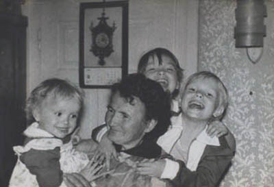
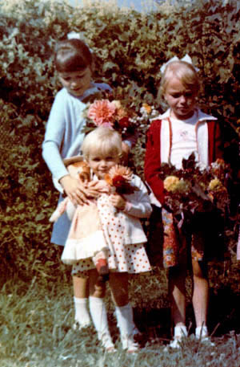
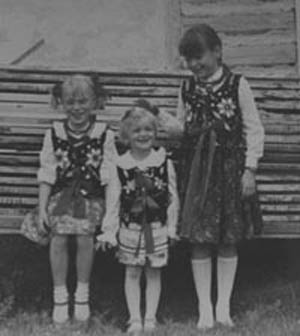
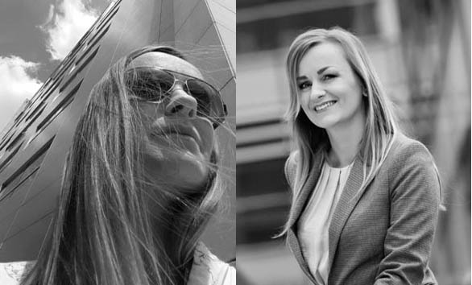
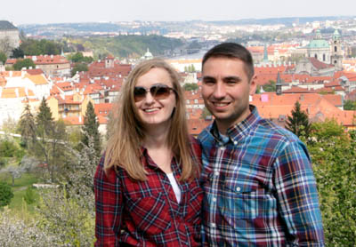

Paulina Klimara jako jedyna z czwórki dzieci Zofii i Tadeusza przyszła na świat w Lubniu. Niewiele brakowało, a świat powitałaby na drodze. Tego dnia - a był to 10 dzień stycznia 1980 roku – na Podhalu panowały siarczyste mrozy a śnieg sięgał po pas. Paulinie spieszyło się jednak na świat i mając za nic zaspy śnieżne i problemy z odpaleniem samochodu postanowiła, że właśnie tego dnia się urodzi. Zofia z dużym brzuchem i Tadeusz szli białą, zaśnieżoną drogą ponad 1.5 km do najbliższej porodówki. Szli i szli, a droga końca nie miała. W końcu dotarli, poród odbył się bez kłopotu, ale wielką radość obojga rodziców nieco przyćmiło rozczarowanie Tadeusza. Oczekiwał syna, tymczasem w białym zawiniątku wierciła się dziewczynka. Trzecia z kolei...

Paulina (pierwsza z lewej) z siostrami i babcią Ireną.
Te wydarzenia wyraźnie wpłynęły na nowonarodzone dziecię, bo wszystko, co jej dotyczyło, było niestandardowe. Mroźny dzień narodzin i eskapada rodziców sprawiła, że pokochała zimę i nic nie było jej straszne. Dziewczynka otrzymała imię Paulina i od razu stała się oczkiem w głowie dwóch starszych sióstr. Jak zawsze w takich wypadkach, noworodek był czyms w rodzaju żywej lalki. Ale na zabawę nie było czasu, bo rodzice zapracowani, trze było zatem wyręczać ich w drobnych pracach domowych, z czym Renata i Małgorzata radziły sobie świetnie.

Paulina (najmniejsza) z siostrami.
Filigranowa, niczym z delikatnej porcelany dziewczynka szybko dała się poznać jako krnąbrne, uparte i nie tolerujące dyscypliny dziecko. Nie chciała chodzić do przedszkola, bo tam był rygor, a w domu, pod niby czujnym okiem babci, mamy Tadeusza, mogła robić to, co jej przyszło do głowy, a co nie zawsze było dozwolone. Rzadko spała w dzień, bo szkoda jej było czasu. Wolała układać coś z klocków albo wymyślać zabawy z guzików, jakich u babci zawsze było pod dostatkiem. W końcu jednak trzeba było iść do szkoły. Podstawówka okazała się jednak całkiem przyjemnym miejscem, mimo wielu obowiązków i zakazów. Paulina czuła się tam dobrze, miała koleżanki i kolegów, była towarzyska i lubiana. Zdawało się, że wszystko zmierza ku dobremu i zadziorna dziewczynka stanie się układną i rozsądną nastolatką.

Paulina (w środku) z siostrami.
Ale tak nie było. W odróżnieniu od starszych sióstr, Paulina spędzała sen z powiek troskliwych i przyzwoitych rodziców. Podjęła wprawdzie naukę w Liceum Ogólnokształcącym w oddalonych o 15 kilometrów Myślenicach, ale nie było to urzeczywistnienie jej marzeń. Miała zdolności artystyczne i marzyła jej się szkoła, gdzie dałoby się to wykorzystać. Od babci nauczyła się szyć i chciała zostać projektantką odzieży. Sztuka była już obecna w ich domu, bo najstarsza siostra chodziła do słynnego Liceum Plastycznego im. A. Kenara w Zakopanem.
Nuda przyzwoitego, z tradycjami, liceum ogólnokształcącego, skłoniła Paulinę do szukania atrakcji w innych miejscach. Zresztą, nigdy nie miała cech drobnomieszczanki i mierziły ją standardy. Lata jej dojrzewania sprzyjał eksperymentom, bo ówczesna młodzież buntowała się przeciw wszystkiemu i wszystkim. Paulina wpisała się w ten trend - wagarowała, ubierała się ekscentrycznie, farbowała włosy na wszelkie możliwe kolory, jeździła na Przystanek Woodstok, włóczyła się po Bieszczadach, przepadała w Zakopanem, gdzie wspinała się z przyjaciółmi na najwyższe góry. Lubiła też zaszywać się w klimatycznych knajpkach Krakowa i toczyć tam ze znajomymi długie filozoficzne rozmowy. Jej pokój w rodzinnym domu w Lubniu bardziej przypominał siedzibę czarownicy, niż pokój nastolatki. Wyrzuciła święte obrazy, odmówiła chodzenia do kościoła i robiła wszystko, aby odróżnić się od grzecznych i ułożonych sióstr. Mimo tego młodzieńczego szaleństwa, uczyła się i przystąpiła do matury. Wcześniej jednak ogoliła głowę na łyso, czym ostatecznie pogrążyła w rozpaczy rodzinę i nauczycieli.
W 1996 roku zmarł tato. Na utrzymaniu mamy było już czworo dzieci i Paulina zrozumiała, że nie może pójść na studia, bo zwyczajne nie ma na to pieniędzy. Trzeba było wydorośleć na tyle, bo zarobić na siebie. Próbowała na różne sposoby. Wyjechała do Wiednia, pracowała w sklepie w Krakowie, podejmowała się wielu innych zajęć, ale wszystko dość szybko ją nudziło. W końcu osiadła w rodzinnym Lubniu, gdzie podjęła pracę w Gminnej Bibliotece Publicznej. Ukończyła szkołę im. H. Radlińskiej dla bibliotekarzy w Wojewódzkiej Bibliotece Publicznej i pracowała z zapałem. Oczywiście trudno by było uwierzyć, że niepokornej nastolatce nagle zaimponowało snucie się między regałami z książkami, ale tak w istocie było, albowiem biblioteka właśnie się komputeryzowała. Paulina od zawsze chętnie się uczyła i ciekawiły ją nowinki, opanowała zatem komputer i stworzyła elektroniczną bazę księgozbioru dostępnego on-line, pierwszą w powiecie.
Ale i to szybko jej zmierzło i... wyjechała do Warszawy! Ot, tak sobie. Miała tam co prawda serdeczną przyjaciółkę z dzieciństwa, ale zdecydował fakt, że studiowała Informację naukową i Bibliotekoznawstwo na Wydziale Historycznym w Warszawie. Przez dwa lata jeździła co dwa tygodnie na zjazdy na Uniwersytet Warszawski, i za każdym razem, gdy w niedzielne wieczory opuszczała z Dworca Centralnego to wielkie, tętniące życiem miasto, żal jej było wracać do małego, zatęchłego lubieńskiego światka. Rozumiała, że pozostając w Lubniu pozostanie już na zawsze starą panną, albowiem lokalni stateczni zalotnicy nie kręcili jej w najmniejszym nawet stopniu.

Bizneswoman.
W podjęciu decyzji o wyjeździe pomogli jej najbliżsi - umierający dziadek Adam Sawicki wsparł ją dobrym słowem, mama, dalsza i bliższa rodzina warszawscy przyjaciele starli się pomóc w miarę sił. Zaprzyjaźniona rodzina Starzyńskich przygarnęła ją pod swój dach, dzięki czemu mogła ukończyć studia i przygotować się do samodzielnego życia w Stolicy. Znalazła ciekawą pracę w studiu filmowym – w tygodniu zajmowała się biurem, a w weekendy asystowała przy castingach. Praca była wymarzona – w ciekawym środowisku, dynamiczna, wymagająca pomysłowości i szybkości w działaniu. Niestety kiepsko płatna. Znalazła nową pracę, tym razem w środowisku informatyczno-geodezyjnym, następnie w środowisku inżynierów – projektantów infrastruktury drogowej i kolejowej. To były bardzo dobre lata, w tym czasie zdobyła cenne doświadczenie, nowe umiejętności, i cennych w jej życiu ludzi. A ściślej jednego, który zaszczepił w niej miłość motoryzacji.

Paulina z Marcinem.
Marcin jest jej partnerem życiowym od wielu lat, chociaż nie obywa się bez rozstań, awantur i burzliwych powrotów. Trudno bowiem wyobrazić sobie, by Paulina zastygła, niczym skamielina, w stabilnym związku. Wygląda jednak na to, że krnąbrna, zbuntowana nastolatka, znalazła radość w pracy (jest koordynatorem do spraw finansowych w warszawskiej kancelarii prawnej) i w spokojnym życiu rodzinnym z wciąż tym samym partnerem. Nie zarzuciła jednak swoich pozostałych zainteresowań. w 2013 roku uzyskała tytuł magistra na Wydziale Filozofii i Socjologii. A tętniące życiem i męczące cywilizacją stołeczne życie zamienia chętnie na wyjazdy z Marcinem do lasu, nad wodę, w góry. Oboje są mieszczuchami, ale powoli, w głębi ich warszawskich dusz lęgnie się marzenie o małym wiejskim domku na starość...